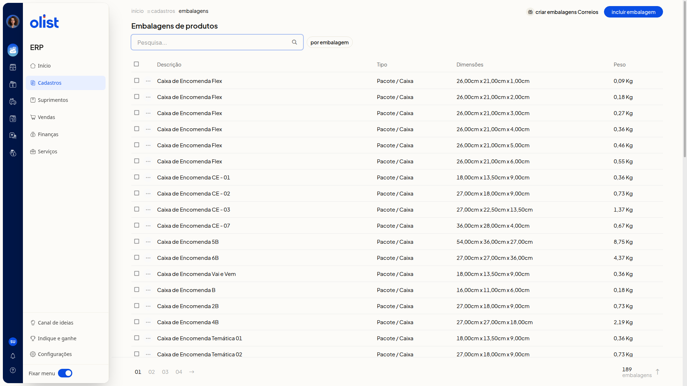
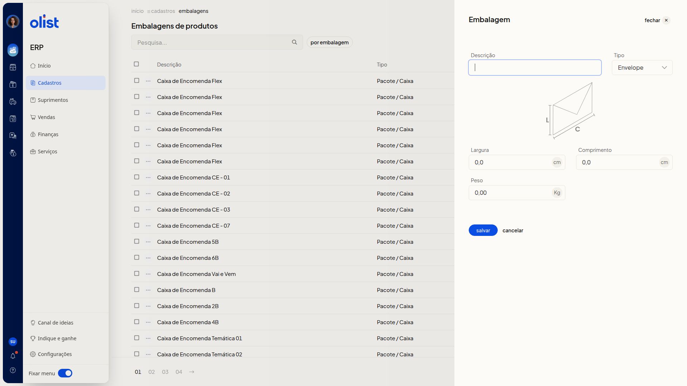
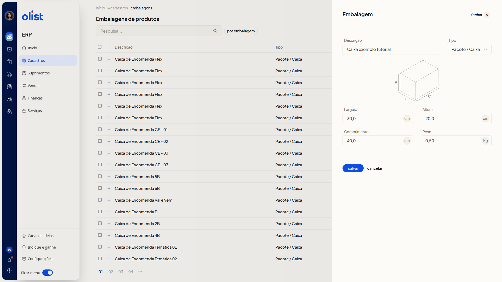
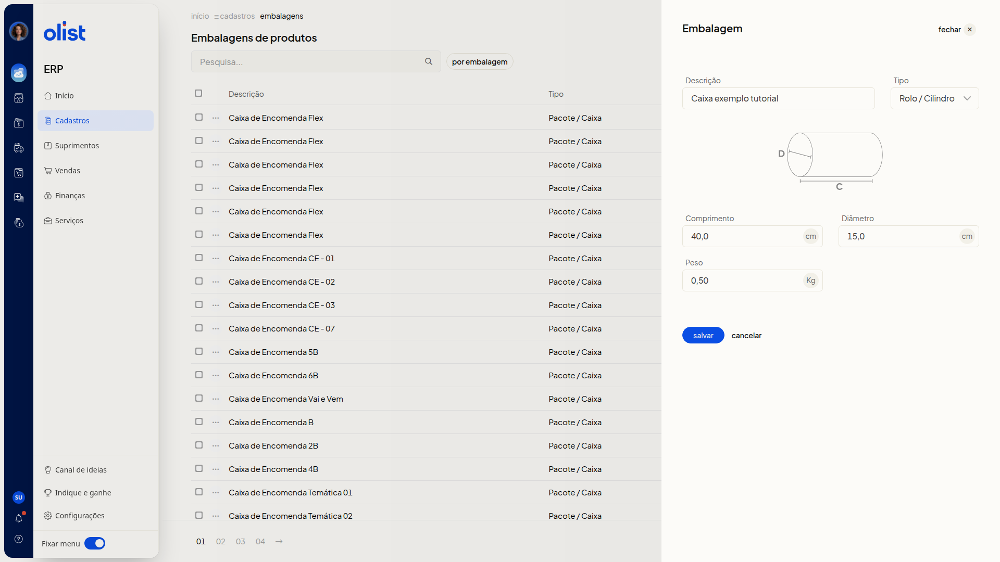
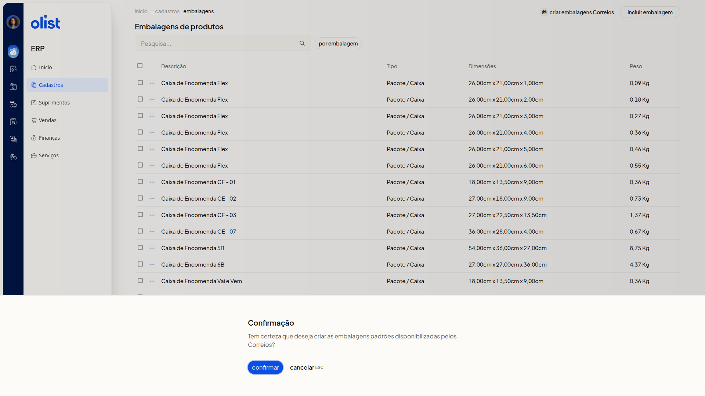

Embalagens
Descrição
A página Embalagens de produtos no ERP da Olist lista as embalagens com descrição, tipo, dimensões e peso. Você consulta a lista e cadastra uma nova embalagem. O tipo escolhido define as medidas: Envelope usa largura e comprimento, Pacote / Caixa acrescenta altura e Rolo / Cilindro usa comprimento e diâmetro. O peso aparece nos três tipos.
No menu lateral, acesse Cadastros > Embalagens. Você cadastra uma embalagem em Incluir embalagem ou cria as embalagens padrões dos Correios em Criar embalagens Correios.
Pré-requisitos
- Ter o menu Cadastros disponível no ERP.
- Ter a permissão de Embalagens para acessar Embalagens de produtos.
Importante
- Criar embalagens Correios não grava na hora. O ERP abre o diálogo Confirmação antes de criar as embalagens padrões dos Correios.
Instruções
Cadastro pela tela
-
No menu lateral, acesse Cadastros > Embalagens.

-
Clique em Incluir embalagem.

-
Informe a Descrição. O campo não é obrigatório.
-
Selecione o Tipo: Envelope, Pacote / Caixa ou Rolo / Cilindro. O campo não é obrigatório. O tipo inicial é Envelope, e a opção muda as medidas.
-
Preencha as medidas do tipo escolhido e o Peso. Estes campos não são obrigatórios. Use vírgula decimal. As medidas ficam em cm e o peso em Kg.
Envelope
Preencha Largura, Comprimento e Peso.
Pacote / Caixa
Preencha Largura, Altura, Comprimento e Peso.

Rolo / Cilindro
Preencha Comprimento, Diâmetro e Peso. Veja o diagrama de cilindro marcado com D e C.

- Clique em Salvar para gravar a embalagem. Para descartar o preenchimento sem incluir a embalagem, clique em Cancelar.
Criar embalagens padrões dos Correios
-
No menu lateral, acesse Cadastros > Embalagens.
-
Clique em Criar embalagens Correios.
-
Leia a pergunta do diálogo Confirmação: Tem certeza que deseja criar as embalagens padrões disponibilizadas pelos Correios?

-
Clique em Confirmar para seguir com a criação. Para desistir, clique em Cancelar ou pressione ESC.
Informações adicionais
A lista mostra as dimensões conforme o tipo
As colunas são Descrição, Tipo, Dimensões e Peso. Pacote / Caixa aparece com três medidas, por exemplo 26,00cm x 21,00cm x 1,00cm. Envelope aparece com duas medidas, por exemplo 16,20cm x 11,40cm. O peso aparece em Kg, por exemplo 0,09 Kg.
A página inclui pesquisa e filtro
A página traz o campo Pesquisa... e o filtro por embalagem.
Links relacionados
Se precisar de ajuda, fale com o suporte.